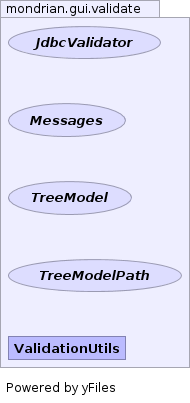

- Overview
- Package
- Class
- Tree
- Deprecated
- Index
- Help
| Interface | Description |
|---|---|
| JdbcValidator |
Validation for database schema, table, and columns.
|
| Messages |
Message provider.
|
| TreeModel |
A generalization of a
javax.swing.tree.TreeModel. |
| TreeModelPath |
A generalization of
javax.swing.tree.TreePath. |
| Class | Description |
|---|---|
| ValidationUtils |
Validates a
MondrianGuiDef. |
